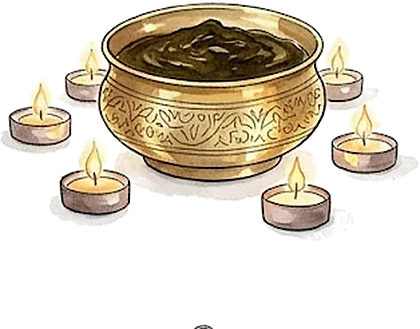
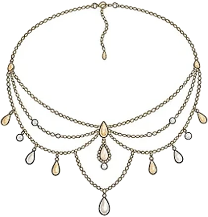
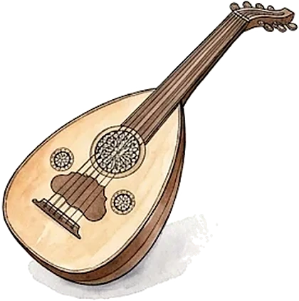
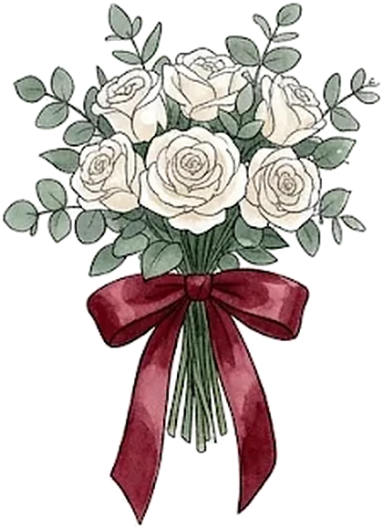
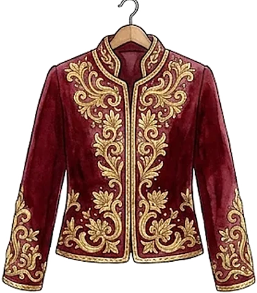
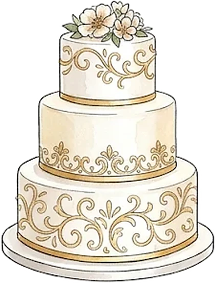
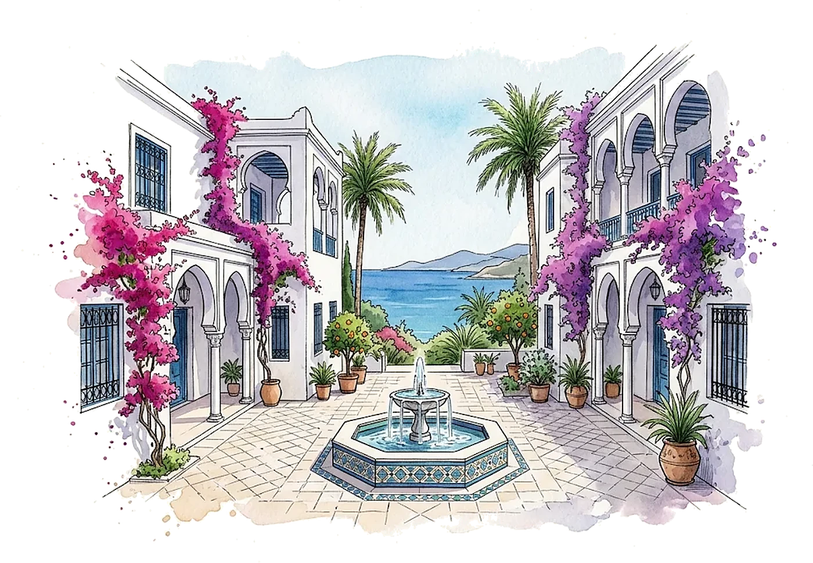
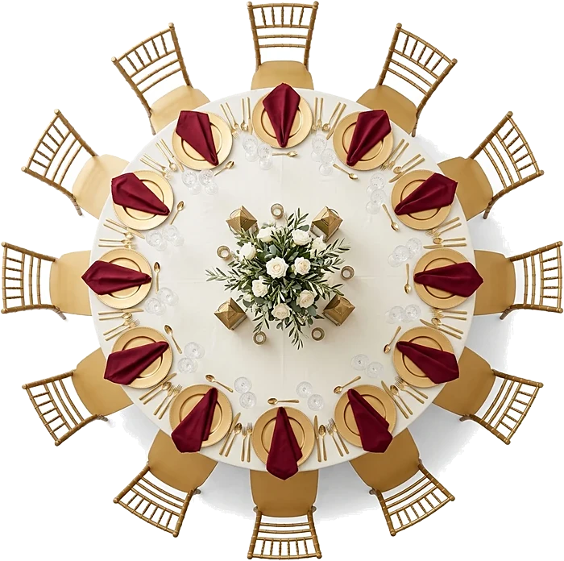
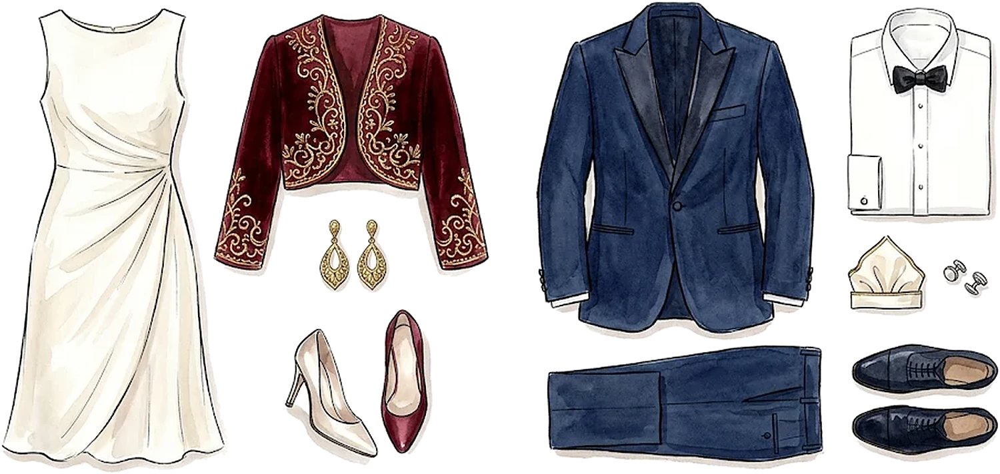

Ils se sont rencontrés à Alger, un soir d'été, sur une terrasse face à la baie.
Lina & Yanis
Le programme
Samedi 3 juillet 2027

VeilleSoirée du henné
17 h 30Arrivée de la mariée
18 h 30Cocktail au son du chaâbi
20 h 30Dîner sous les arcades
22 h 00Défilé des tenues de la mariée
23 h 30Gâteau des mariés


Le lieu
Villa des Arcades
Tipaza
Tenue
Tenue de soirée
Robes longues et costumes sombres. Celles et ceux qui le souhaitent peuvent porter une pièce brodée d'or, sans aucune obligation.
Messieurs
Mesdames

Une surprise
Grattez le médaillon du bout du doigt
Il reste
--jours
--heures
--minutes
Votre réponse
Merci de répondre avant le 1er juin 2027.
Je serai présent·eJe ne pourrai pas venir